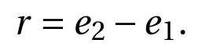

机器学习或深度学习的研究常常会用到一些公开数据集，这里呢，为大家介绍一个公开的古典钢琴乐的MIDI数据集。
这是字节跳动（ByteDance）的项目，项目地址：
https://github.com/bytedance/GiantMIDI-Piano
首先说一下MIDI是什么，可以简单理解为数字乐谱。
进行步骤：
-
从IMSLP（International Music Score Library Project）抓取作曲家的名字和他的曲目名（最终获得18067个作曲家的名字和143701个曲子名称，并记录每个作曲家的名字，曲子，出生日期，死亡日期，国籍。有些作曲家国籍，出生死亡日期是缺失的
-
在Youtube上根据作曲家的名字和曲名爬曲子，下载Youtube返回的第一顺位的曲子。这里需要注意的是返回的结果里的字和我们搜索的关键字或者关键字集合未必完全匹配，但仍有可能是正确的结果，搜索结果匹配度计算方式如下（Jaccard Similarity，X是搜索关键字的集合，Y是搜索结果的关键字的集合，J表示相似度，越大越好，这个任务里阈值是0.6）：
最后找到了9709个作曲家的60724个曲子。
- 这样下载的曲子，有些是单纯的钢琴曲，但有些不是，怎么从里面择出钢琴曲呢？他们训练了一个CNN网络，把曲子切成一秒一秒的片段，分别转换成梅尔频谱（Log Mel Spectrograms）输入，输出是是钢琴曲的概率，再取平均值，最后的结果如果大于0.5，则判断该曲子为钢琴曲。最后得到2786个作曲家的10854个钢琴曲。
- 通过他们之前设计的一个系统high-resolution piano transcription system（https://github.com/bytedance/piano_transcription），将收集的钢琴曲都转换成琴谱，转谱内容包括音高（pitch），琴键的触发（onset）、抬起（offset）、和力度（velocity），以及踏板的触发（onset）和抬起（offset）。
接下来看一些统计数据：
按国家统计了数据集中作曲家的数量。
数据集中88个琴键被使用的情况。
数据集中作曲数量Top 100的作曲家最常使用的琴键。
这里展示了来自三个不同地方的作曲家的琴键的使用情况。
六个作曲家使用不同调的频率的统计。
音差分布的统计，音差即后一个音调减去前一个音调的数值。
不同三和弦的使用频次。
不同四和弦的使用频次。
最后看一下，如何评估这个转谱系统的，他们手工标注了数据集中100个钢琴曲，发现其中有89个确实是钢琴曲，也就是说分辨一个曲子是不是钢琴曲的系统的精度是89%。
再用HMM（Hidden Markov Model）这样一个对齐工具来对齐由系统生成的MIDI和手工生成的MIDI内容。那么转谱错误率计算公式如下：
S（substitution）指替代错误，I（insertion）指插入错误，D（Deletion）指删除错误的数量。N为音符总数。
对于MAESTRO这个数据集，错误的来源分两种，一种是performance error（钢琴家演奏的时候弹错了）和system error（对齐系统的错）：
而GiantMIDI还有一个transcription error（翻译错误）：

Relative error的计算方式如下：

Relative error会近似于transcription error。因为由系统和演奏造成的错误值大概率是相近的。
文章中评估了52首同时出现在这两个数据集中的曲子。得到的结果如下:
Relative difference越小，说明曲转谱系统越好。
这篇就到这里了，简单介绍了一下数据集的产生，如果大家对转谱系统感兴趣，可以去看他们团队的另外一篇文章：
<div align=center></div>
他们公开的数据集包括搜集到的钢琴曲mp3，转谱的结果，以及相关的代码和模型。对古典音乐感兴趣的小伙伴可以下载听听。
最后还是那句话，觉得有用就关注我吧。右下角点个“在看”再走哇。
参考：
[1] 机器之心，万余首钢琴作品、一千多个小时，字节跳动发布全球最大钢琴MIDI数据集，2020

 解析/2.png)
的训练经验(Moco v3) -- Moco中的ViT/1.png)
Comments